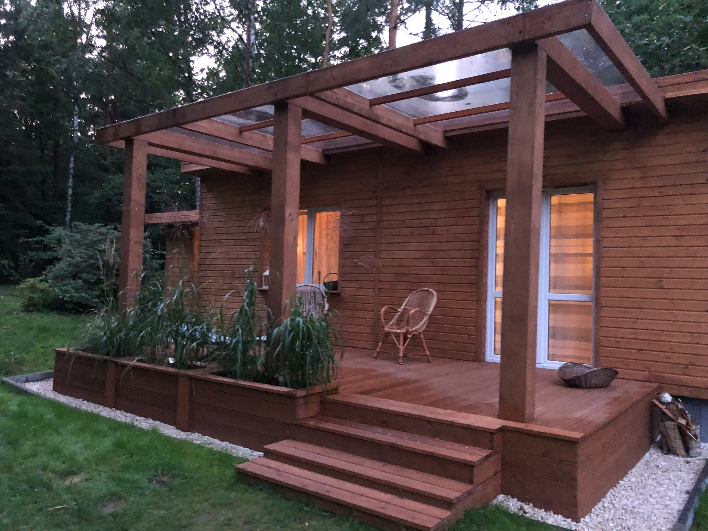
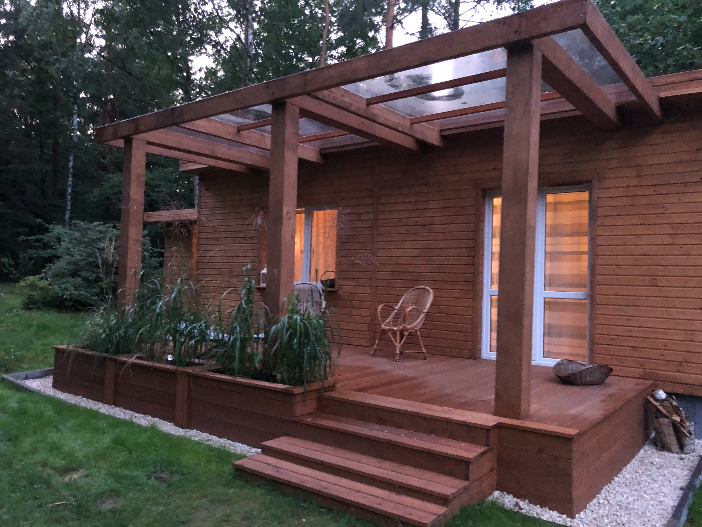

AMJ BOUW sp. z o. o.
 

Specjalizujemy się od 10 lat w budowie tarasów oraz altan ogrodowych, zabudów tarasowych, sprzedażą drewna tarasowego, konstrukcyjnego, a także na elewacje. Wykonujemy również więźby dachowe oraz kompleksowo dachy. Materiał jaki używamy do swoich prac posiada unijne certyfikaty jakości jest odpowiednio wysuszony i przechowywany, a także ma certyfikaty uzyskania - FSC® i PEFC™, które świadczą o tym, że pochodzi ono tylko z legalnych wycinek. Korzystając z usług naszej firmy Klient w zamian dostaje fachowe doradztwo oraz najwyższą jakość, staranność oraz terminowość w wykonaniu zlecenia na każdym etapie począwszy od kontaktu do zakończenia prac.
Tarasy
Zajmujemy się tworzeniem tarasów z drewna poniewaz jest to wytrzymała i efektowna konstrukcja. W przeciwieństwie do płytek, jest przyjemny w dotyku i nie nagrzewa się latem. Odpowiednio zabezpieczony taras drewniany zachwyca naturalnym wyglądem przez wiele lat. Natomiast taras z desek kompozytowych cieszy domowników funkcjonalnością i nie wymaga konserwacji. Mamy w swojej ofercie tarasy:
Tarasy drewniane
Drewno to surowiec równie szlachetny, co wytrzymały i sprawdzony. Nie dziwi więc jego stale rosnąca popularność w rozmaitych gałęziach budownictwa. Elewacja oraz taras z drewna to kwintesencja elegancji i nowoczesności, wykonanej w zgodzie z naturą. Tarasy drewniane zyskują na popularności nie tylko wśród miłośników rozwiązań ekologicznych. Drewno połączone z kamieniem, stalą lub szkłem to jeden z wiodących trendów w dziedzinie urządzania domów i ogrodów. Znakomicie wpisuje się w styl architektury minimalistycznej, jak i klasycznych projektów oraz rozwiązań. Drewniany taras jest zawsze miły w dotyku i cieszy oko niezależnie od pory roku. Latem nie nagrzewa się, a zimą nie jest śliski. Zapewnia funkcjonalność, trwałość oraz ponadczasowy, klimatyczny wygląd. Poznaj jego zalety i wybierz gatunek drewna dopasowany do swoich potrzeb.
Tarasy kompozytowe
Co jeśli chcesz cieszyć się wyglądem drewnianego tarasu, a nie masz czasu dbać o jego regularną konserwację? Nic prostszego. Z pomocą nadchodzi taras kompozytowy. Deska kompozytowa to sprawdzony przepis na bezproblemowy w utrzymaniu taras o estetycznym wyglądzie. Odporny na niekorzystne warunki pogodowe, działanie wody, grzyby, pleśń oraz promieniowanie UV. Taras z deski kompozytowej jest wygodny w utrzymaniu, jak i układaniu. Wystarczy zaopatrzyć się w odpowiedni zestaw do ukrytego montażu, a na powierzchni swojego tarasu nie uświadczysz widoku wkrętów. Cięcie desek kompozytowych nie stanowi problemu. Używamy w tym celu tych samych przyrządów, co do obróbki drewna. Pewny wybór na lata.
Elewacje
Naturalne drewno jest materiałem chętnie wykorzystywanym przez architektów i dekoratorów wnętrz. Drewniana elewacja to efektowna i trwała wizytówka domu. W naturalny sposób ociepla wygląd oraz izoluje termicznie i akustycznie.
Elewacje drewniane
Naturalne drewno, mimo że wymagające, jest materiałem chętnie wykorzystywanym przez architektów i dekoratorów wnętrz. Elewacja z drewna idealnie wpisuje się zarówno w tradycyjny, minimalistyczny, jak i skandynawski styl budownictwa. W nowoczesnej architekturze drewniana elewacja jest łączona z industrialnymi materiałami, takimi jak metal i szkło. Drewniane elewacje stały się elegancką i prestiżową wizytówką najdroższych budynków w centrach miast oraz modnych dzielnic podmiejskich.
Elewacje thermowane
Drewno termowane (thermo drewno) to pewność komfortowego użytkowania przez długie lata. Odporne na warunki atmosferyczne oraz degradację biologiczną. Dzięki redukcji wilgotności zapewnia lepszą stabilność wymiarową. Jest również pozbawione żywicy, co zapobiega powstawaniu wycieków.
Podbitki i boazeria
Drewniana podbitka dachowa jest ozdobą i znakomitym zwieńczeniem elewacji, natomiast boazeria nadaje ciepły klimat domowym wnętrzom. Podbitka to element wykończeniowy pod okapem dachu, który dodatkowo chroni elementy konstrukcji dachowej wystającej poza obrys budynku. W asortymencie znajdą Państwo podbitkę i boazerię z najwyższej klasy drewna świerkowego, pochodzącego z kontrolowanej wycinki na północy Europy. To estetyczny i funkcjonalny sposób wykończenia elewacji, jak i aranżacji wnętrz. Odpowiednio zaimpregnowany świerk nie zmienia barwy pod wpływem światła. Drewnianą podbitkę należy konserwować co kilka lat (malować, lakierować lub olejować).
Drewno budowlane
Oferujemy Państwu najwyższą jakość usług, obsługi oraz przede wszystkim drewna. Jest to szczególnie istotne w przypadku drewna konstrukcyjnego. W naszej ofercie dostępna jest pełna gama produktów z tej kategorii: począwszy od drewna litego C24, KVH® do BSH.
KVH®
Przedstawiamy nowoczesny produkt z drewna iglastego, posiadający fazowane krawędzie i długość 13 m. To czterostronnie strugane drewno konstrukcyjne, które zostało wysuszone w komorach suszarniczych do 15% wilgotności i przesortowane pod względem wytrzymałości.
Opis techniczny
Podczas produkcji kontrolowana jest wilgotność i jakość każdego elementu. Belki dłuższe niż 5 m łączone są przy pomocy mikrowczepów. Długość połączonych w ten sposób odcinków wynosi 13 m — bez straty na wytrzymałości. Zgodnie z europejską normą EN1912 klasyfikuje się w klasie C24. KVH® oprócz bardzo dobrej stabilności wymiarowej, charakteryzuje się niską podatnością na skręcenia oraz mikropęknięcia. KVH® charakteryzuje się niskim współczynnikiem przewodzenia ciepła w porównaniu z innymi konstrukcyjnymi materiałami budowlanymi, takimi jak stal lub beton. Stosując elementy nośne ścian i dachów z KVH® redukujemy tworzenie się mostków cieplnych, co pozwala na wznoszenie budynków efektywnych energetycznie.
Zastosowanie KVH®
Drewno konstrukcyjne KVH® stosowane jest przeważnie:
- nośne i usztywniające konstrukcje z drewna np.: wsporniki, belki, płatwie, krokwie, słupy i oczepy elementów ściennych, stropowych oraz dachowych budynku
- widoczne elementy o wysokich wymaganiach estetycznych (KVH® Si)
- kiedy można lub trzeba zrezygnować z chemicznego zabezpieczenia drewna
- elementy konstrukcyjne, które wymagają wysokiej stabilności wymiarowej (± 1 mm)
BSH
Opis techniczny
Materiał z najwyższej półki, który zapewnia najlepsze możliwości wymiarowe i nośne. Posiada również wysokie walory estetyczne. Powstaje z co najmniej trzech równolegle klejonych, suszonych desek lub lameli z drewna iglastego. Przeznaczony do stosowania w konstrukcjach nośnych o dużych rozpiętościach oraz obciążeniach. Drewno klejone ma wyjątkowo wysoką zdolność nośną przy względnie niskiej masie własnej. Nie pęcznieje i nie odkształca się. Jest też bardziej odporne na działanie wilgoci i zmiennych warunków atmosferycznych. BSH sprawdza się jako materiał budowlany nawet w chemicznie agresywnym otoczeniu. Dzięki impregnacji klasy 1 lub 2 drewno może być zabezpieczone przed atakiem insektów oraz grzybami. Dlatego jest wykorzystywane do najbardziej wymagających projektów. Stosowane w halach sportowych, produkcyjnych i wystawowych, basenach oraz salonach samochodowych.
Zalety drewna BVH
- Wysoka wytrzymałość (GL24h).
- Stabilność wymiarowa.
- Dokładność wymiarowa w przekroju i długości.
C24
Drewno konstrukcyjne ze świerku — certyfikowane w klasie C24. Nie jest łączone na mikrowczepy. Według obowiązujących przepisów i norm budowlanych to materiał wymagany do stosowania na konstrukcje dachowe, stropy, ściany i domy szkieletowe. Drewno jest strugane i suszone, a jego wilgotność wynosi od 15 do 18%.
Dostępne w grubościach 45 i 60 mm, ich szerokość rośnie stopniowo co 25 mm, a długość pojedynczego odcinka sięga do 6 m. Są to wymiary typowe dla tradycyjnego budownictwa szkieletowego. Jest bardzo wytrzymałe i zachowuje znakomitą sztywność, dzięki czemu świetnie sprawdza się do wznoszenia domów drewnianych. Każda sztuka posiada fabryczne oznakowanie klasy wytrzymałości.
Galeria

{kind=link}
{kind=link}
{kind=link}
{kind=link}
{kind=link}
{kind=link}
{kind=link}
{kind=link}
{kind=link}
{kind=link}
{kind=link}
Opinie
Porządna, uczciwa i fachowa firma, solidnie, fachowo i terminowo. Polecam!
Krzysztof K.
24 kwietnia 2022
Szczerze polecam współpracę z tą firmą. Pracę przebiegały sprawnie i terminowo. Nie mam żadnych uwag co do jakości wykonania. Pan Tomek jest bardzo kompetentny, fachowy i operatywny, doradzi w każdym zakresie. Jestem bardzo zadowolona.
Grażyna W.
19 kwietnia 2022
Taras i ławeczkę wokół jacuzzi wykonano zgodnie z projektem, solidnie, wykonawca podpowiadał dobre rozwiązania, jesteśmy zadowoleni.
Maciej W.
30 sierpnia 2021
Zgodnie z zasadą 'raz a dobrze' , postanowiłem dokonać renowacji tarasu (zerwanie płytek ceramicznych, wyrównanie i zabezpieczenie szlichty betonowej) i ułożenie tarasu z desek (modrzew syberyjski) z pomocą firmy AMJ Bouw. Decyzja była b.trafna - fachowe prace, odpowiednim sprzętem i szybki termin (tygodniowy, taras ok.40m2) bardzo pozytywnie wpłynął na realizację. Gorąco polecam firmę (że nie wspomnę o 'sympatyczności' wykonawców) !.
Andrzej O.
20 sierpnia 2021
Polecam firmę. Jestem bardzo zadowolona. Szybko sprawnie i fachowo. Bardzo dobre podejście do klienta.
Agnieszka P.
24 maja 2021
Jakość pracy, wykonanie, kompetentni pracownicy.
Anna P.
16 maja 2021
Profesjonalizm w każdym calu. Dokładność co do milimetra. Nie poznałem ekipy bardziej wartej polecenia.
Paweł S.
14 maja 2021
Dotrzymany umówiony termin realizacji, fachowo a przede wszystkim czysto wykonane zlecenie. Doradztwo i pełne zaangażowanie w wykonanie usługi powodują, że z całą pewnością ponownie skorzystam z ich usług. Polecam.
Tomasz K.
13 maja 2021
Kontakt
Działamy głównie na terenie województw Podkarpackie, Świętokrzystkie, Małopolskie i Mazowieckie.